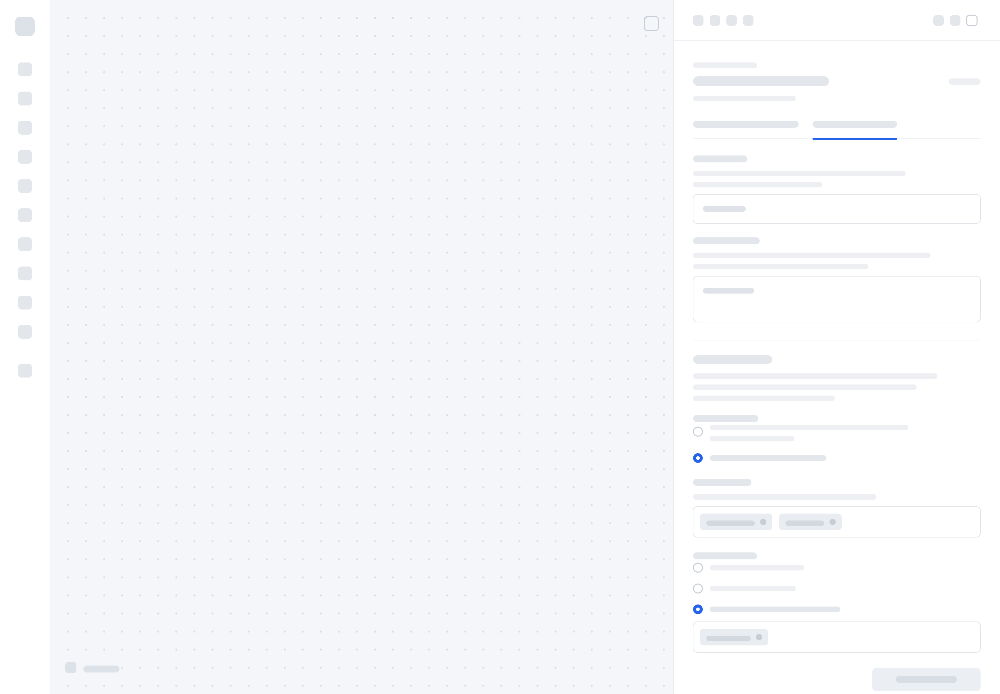
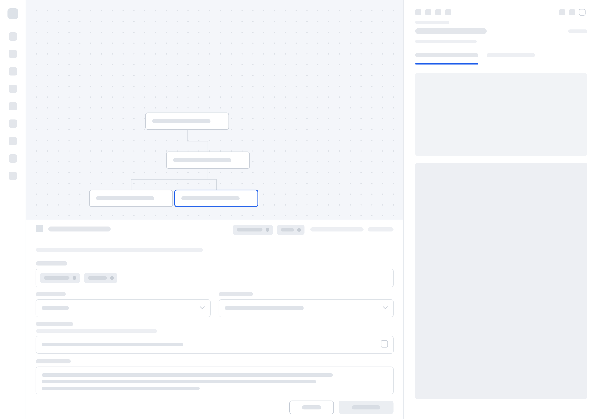

Impact
-
30%
fewer support tickets about unclear system behaviour, among pilot users
-
28%
faster workflow implementation for the implementation teams
-
In pilot
with around 40% of internal users across ARKK's implementation, solutions and services teams
Overview
The workflow canvas is the core of ARKK's enterprise data platform. Tax and finance data moves through it as a chain of activities: imports, transformations, checks, approvals and publishing. Today ARKK's implementation, solutions and services teams build these workflows for clients. The longer-term aim is for clients, and AI agents, to build their own, so the environment needed to be ready for less specialised builders.
The programme covered three initiatives:
- Canvas redesign. A new foundation with clear activity states.
- Activity configuration drawer. One container for every activity type.
- Workflow test suite. A new capability: an MVP design that let users check an activity without leaving the canvas.
The problem
- Users could not tell what the system was doing. Activities had no states, so errors, warnings, unpublished changes, changes in inbound data and deletions were all invisible. When the system did not behave as expected, users could not see why. They refreshed the page to check that deletions had gone through, and raised support tickets about it.
- The canvas was hard to work on. There was no full-screen view, no pan, zoom or auto-layout, and rendering was slow. These were limits of the underlying library, not issues that could be patched.
- Testing meant leaving the canvas. To see whether a workflow worked, users had to schedule it and leave the environment.
Opportunity
ARKK wants clients, and eventually AI agents, to build their own workflows instead of relying on its implementation teams. That only works if the builder makes its own behaviour clear: what each activity is doing, what has gone wrong, and whether a change works before it runs. Making the canvas visible and testable for today's expert builders was the first step towards opening it up to less specialised ones.
Users
The canvas serves two groups, often different people:
- Workflow designers build and maintain workflows. Today these are ARKK's implementation, solutions and services teams; in future they will include clients and AI agents.
- Process runners run the workflows as part of their work. They sit in the office of the CFO: tax managers, accountants and anyone handling tax processes.
Constraints
- Activity internals were out of scope. The inside of each activity could not change, which limited what the canvas and drawer could control.
- Users had fully adopted the existing builder. They were used to how it worked, so changes had to improve it without asking them to relearn it.
- The wider workflow page was out of scope. The work covered the canvas, drawer and test suite, not the page around them.
- The canvas had to be built on an Angular library, and the programme ran for around three months.
Initiative one: canvas redesign
Choosing the foundation
Engineering ran a spike across the available Angular libraries. Foblex Flow offered the most out of the box and could be customised enough to match our designs. Another designer had run discovery and the divergence phase. I picked the project up at convergence.
Knowing the library's edges
Throughout the work I kept mapping what Foblex Flow handled out of the box against what needed custom design. That kept design effort on the real gaps.
Room to work
We added a full-screen canvas, so larger workflows could be seen and worked on as a whole, alongside pan, zoom and auto-layout.
States and interaction detail
I defined the activity states (error, warning, unpublished changes, changes in inbound data and deleted), their colours, and the interaction details around them. For example, hovering over an activity highlights its whole chain.
What changed through review
Feedback from review sessions reshaped several decisions:
- the state colours
- the wording of error messages
- a short delay before the chain highlights on hover, so the canvas did not flicker as the cursor moved
- a stroke on connectors where they overlap, so crossing lines stay readable
Initiative two: activity configuration drawer
One container, not twelve designs
Rather than designing each activity's drawer separately, I designed one container that could hold any activity type.
Structured around who needs what
The drawer has three sections:
- Activity identity (name and description) sits fixed at the top, for the workflow designer.
- Below it are two tabs. Configuration changes with each activity type. Runtime settings are for the person who runs the process.
I explored other layouts. Stacking the sections meant endless scrolling, and both parts needed to stay visible. Tabs solved both problems and were already used within some activity configurations and elsewhere in the platform, so the pattern was familiar and consistent.
Three sizes, each for a different need
Stakeholders asked to drag the drawer's edge to any width. After discussing it, we agreed that level of control was more granular than the tasks needed. We also explored a split layout where canvas and drawer resized together, but it was not technically feasible. I settled on three fixed sizes:
- Third-screen, for setting up the canvas, with the workflow in view
- Half-screen, for a parallel view of the workflow and the activity side by side
- Full-screen, for focusing on configuration, with runtime settings collapsible to make room

Initiative three: MVP design for a workflow test suite
Closing the loop
There was no way to test a workflow inside the builder, so this was new rather than a redesign. In the MVP, users choose the files, entity and period to test against, then see the outcome on sample data. They can check whether an activity behaves as expected without scheduling the workflow or leaving the canvas.

What the MVP left out
Testing shows whether an activity runs, not what changed or the full data it produced. Diffs and data pulling were each high effort and would have taken over the initiative, so I left them for a later phase.
Why undo and redo waited
Undo and redo on the canvas alone would have been misleading. Users would expect to undo a change made in an activity's configuration, and configuration internals were out of scope. Rather than ship a partial version that broke that expectation, I deferred it to be designed with the configuration itself.
Handoff and pilot
I handed off all three initiatives with use cases, annotated designs and specifications. The new builder is now in pilot with around 40% of internal users across ARKK's implementation, solutions and services teams. Early results:
- 30% fewer support tickets about unclear system behaviour, such as deletions and errors
- 28% faster workflow implementation for the implementation teams
The next measure is adoption: first across all of ARKK's own teams, and later by clients building their own workflows.